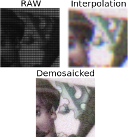
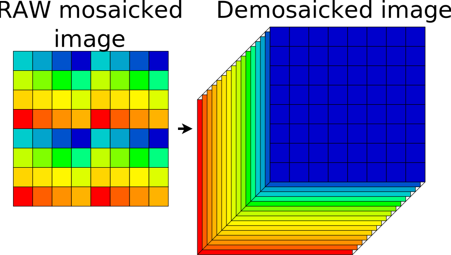

Hi! I'm a PhD candidate from Poland. I'm interested in computer vision. Currently I'm trying to finish up my
PhD at Ghent University, in
which I focus on hyperspectral imaging technology - applications and image processing algorithms.
Projects and experiences


Hyperspectral demosaicing
Snapshot mosaic hyperspectral cameras work similarly to RGB cameras, which capture RGB images
using a Bayer filter - the main difference is an increased number of bands.
Hyperspectral demosaicing aims to recover full spectral information at each pixel from a mosaicked image
captured using a snapshot camera. We demonstrate, that robust demosaicing models with near SOTA performance can
be trained using existing RGB datasets with simple hyperspectral augmentations. The resulting model was used in
multiple internal projects.
Paper:
Cube-it ... (2024)

Inspecting high-voltage towers using drones
Our group researched the use of hyperspectral imaging for the task
of corrosion detection and corrosion severity estimation. We worked in cooperation with the Belgian electrical
grid operator (Elia). Paper:
Drone based ... (2024)
Hyperspectral object tracking
Can hyperspectral information improve object tracking performance? In theory, wider spectral range adds
discriminative power, which allows the tracker to distinguish between similar objects.
To study this, multiple editions of
hyperspectral object tracking
challenge were organized (some of which I co-organized).
By incorporating temporal and spectral domain into a SOTA RGB tracker, our proposed method achieved the
(unofficial) 3rd place at the 2023 edition of the challenge.
Paper:
Helios ... (2023)
TCL Research Europe - computer vision in mobile phones
My first computer vision job! During my time there I worked on three projects: a proof of concept application
for
object removal from photographs, panorama stitching, and HDR camera mode.
Learned a lot about low level code optimizations, c++, neon, image stitching, denoising, object detection, HDR.
Patent:
Method for ... (2021)
Publications
-
Automated Inspection of Heritage Sites: UAV RGB and Hyperspectral Photogrammetry Applied to Castle
of
Horst (2024)
P. Soubrier, R. Muszyński, N. Van Den Bossche, H. Luong and M. Vlaminck,
14th Workshop on Hyperspectral Imaging and Signal Processing: Evolution in Remote Sensing
(WHISPERS),
Helsinki, Finland
link
-
Cube it: Training Hyperspectral Demosaicing Models Using Synthetic Datasets (2024)
R. Muszyński and H. Luong,
14th Workshop on Hyperspectral Imaging and Signal Processing: Evolution in Remote Sensing
(WHISPERS),
Helsinki, Finland
link
📄
-
Drone-Based Corrosion Detection on High-Voltage Transmission Towers Based on Spectral Angle
Classification
and Clustering (2024)
R. Muszyński et al.,
14th Workshop on Hyperspectral Imaging and Signal Processing: Evolution in Remote Sensing
(WHISPERS),
Helsinki, Finland
link
📄
-
Detecting change in graffiti using a hybrid framework (2024)
B. Wild; G. Verhoeven; R. Muszyński; N. Pfeifer,
The Photogrammetric Record
link
-
Helios: Hyperspectral Hindsight Ostracker
R. Muszyński and H. Luong,
13th Workshop on Hyperspectral Imaging and Signal Processing: Evolution in Remote Sensing (WHISPERS)
link
github
📄
-
Modeling the Effect of Relative Camera Pose Differences on Change Detection Tasks (2023)
R. Muszyński and H. Luong,
International Symposium on Image and Signal Processing and Analysis (ISPA)
link
📄
-
Method for automatic object removal from a photo, processing system and associated computer program
product
(2021)
J. Łukasiewicz et al., Patent
link